Kyle Boss, Declan Jones and I made a ray tracer from scratch. It supports the required things:
- Support for directional, point and ambient lights
- Phong shading model for spheres and polygons
- Reading and rendering .obj files (with normal interpolation if specified)
- Shadows and reflections
- Translations, scales and rotations (linear transformations)
- Using openCV to save to a .PNG
As well as these extra features:
- Anti-aliasing (random/jittered model)
- Multithreading
- Acceleration with AABB Trees
- Shearing
All inputs to our ray tracer are a .scene file in which each line specifies a different object (camera location, light, shape, transformation etc.) To evoke anti-aliasing, add "alias", and to evoke multithreading, add "thread [# of threads]".
Examples
Eggs in a Basket
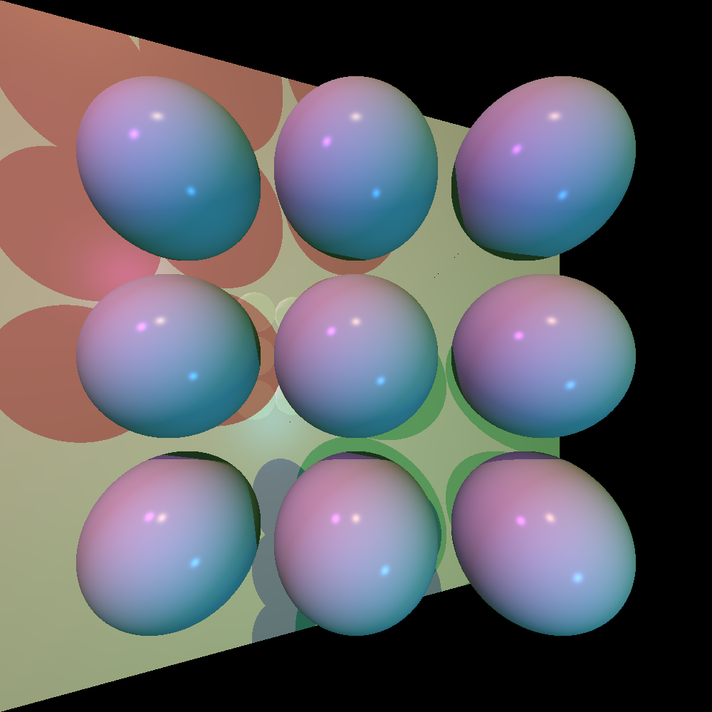 Showcases multiple lights and shadows, as well as reflectivity and a perspective viewing of both spheres and triangles.cam 0 0 2 -1 -1 1 1 -1 1 -1 1 1 1 1 1 ltd 2 2 3 .9 .24 .82 ltp -2 2 3 .75 .2 .95 ltp 2 -2 3 .1 .5 .9 ltd 0 -1 -1 .6 .5 .2 lta 1 1 1 mat .1 .2 .1 .5 .5 .5 .5 .5 .5 250 0 0 0 sph 0 -1 0 .45 sph -1 -1 0 .45 sph 1 -1 0 .45 sph 0 0 0 .45 sph -1 0 0 .45 sph 1 0 0 .45 sph 0 1 0 .45 sph -1 1 0 .45 sph 1 1 0 .45 mat .1 .1 .1 .5 .6 .25 .2 .2 .2 64 .3 .3 .3 tri 4 4 -5 -4 4 -2 -4 -4 -2 tri 4 4 -5 -4 -4 -2 4 -4 -5 thread 3
Crystal Gems
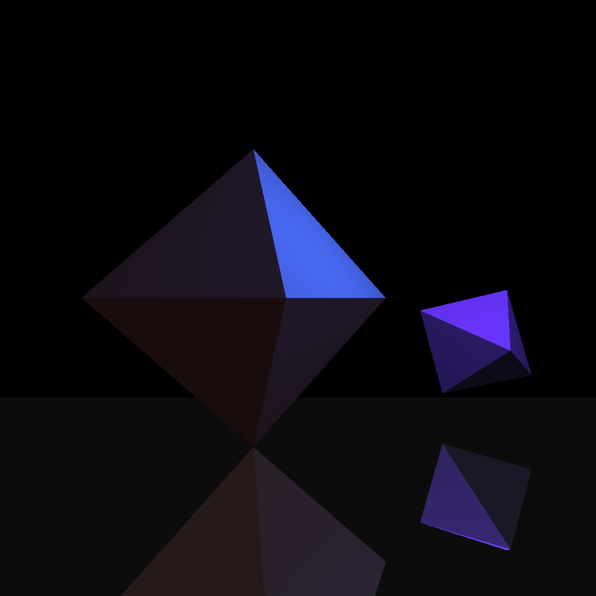 Showcases .obj parsing (Tetrahedron obj kindly provided by Baruch), reflective floor and all transformations on triangles.
cam 0 0 2 -1 -1 1 1 -1 1 -1 1 1 1 1 1
mat .2 .1 .1 .18 .36 .9 0 0 0 64 0 0 0
ltp 1 1 1 1 1 1 0
lta .5 .5 .5
xft -.3 0 0
xfr 0 105 0
obj octa.obj
xfz
xfs .5 .5 .5
xft 1 -.25 -1
xfr -25 -90 0
mat .1 .1 .2 .36 .16 .9 0 0 0 64 0 0 0
obj octa.obj
xfz
mat .1 .1 .1 0 0 0 0 0 0 0 1 1 1
tri -5 -1 -1 5 -1 -1 -5 -1 1
tri 5 -1 -1 5 -1 1 -5 -1 1
Smooth Me!
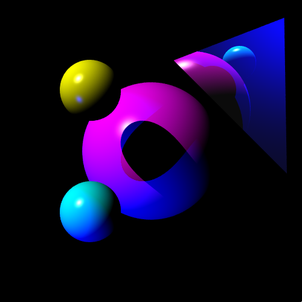 Showcases anti-aliasing on multiple shapes and shadows.cam 0 0 0 -1 -1 -3 1 -1 -3 -1 1 -3 1 1 -3 ltd 0.57735027 -0.57735027 -0.57735027 1 1 1 ltd 0.57735027 0.57735027 -0.57735027 0 0 1 mat 0.1 0.1 0.1 1 0 1 1 1 1 50 0 0 0 sph 0 0 -20 3 mat 0.1 0.1 0.1 1 1 0 1 1 1 50 0 0 0 sph -2 2 -15 1 mat 0.1 0.1 0.1 0 1 1 1 1 1 50 0 0 0 sph -2 -2 -15 1 mat 0.1 0.1 0.1 0.1 0.1 0.1 1 1 1 50 1 1 1 tri 5 5 -17 1 4 -20 6 -1 -20
Attenuation & Aliasing
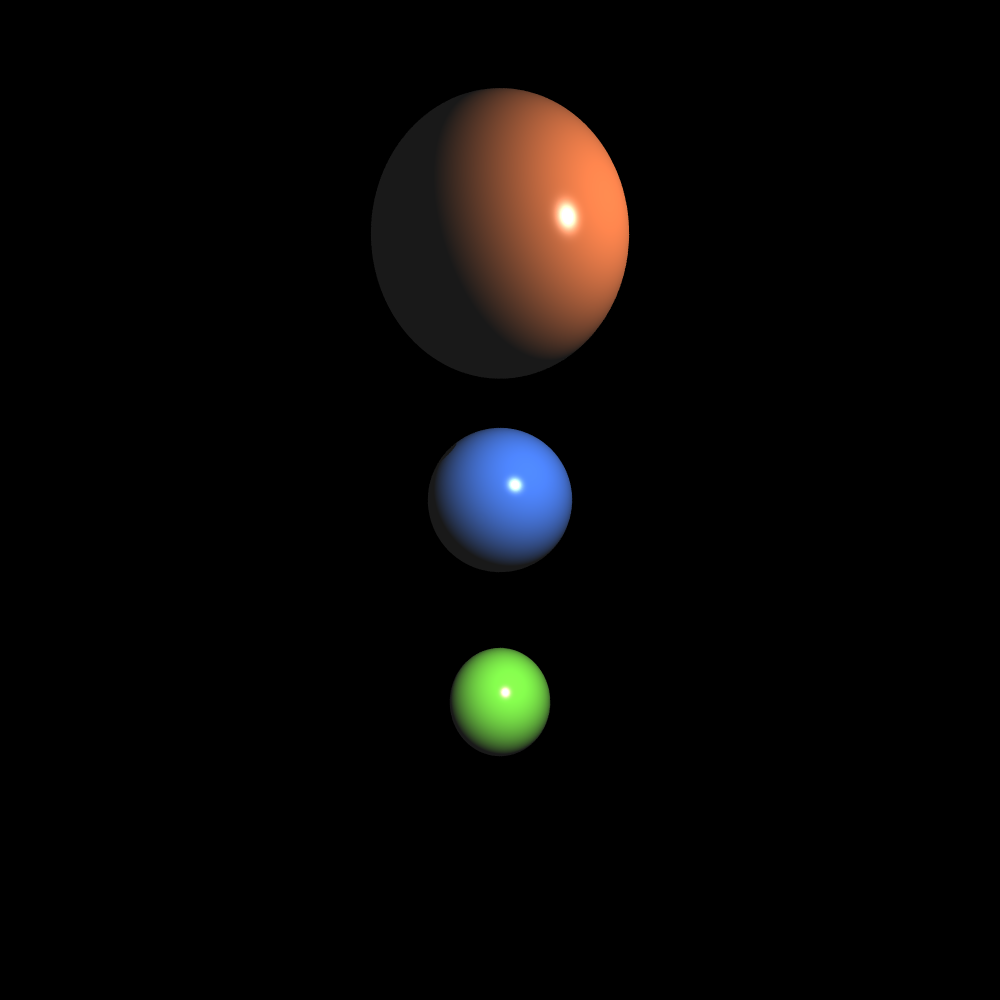 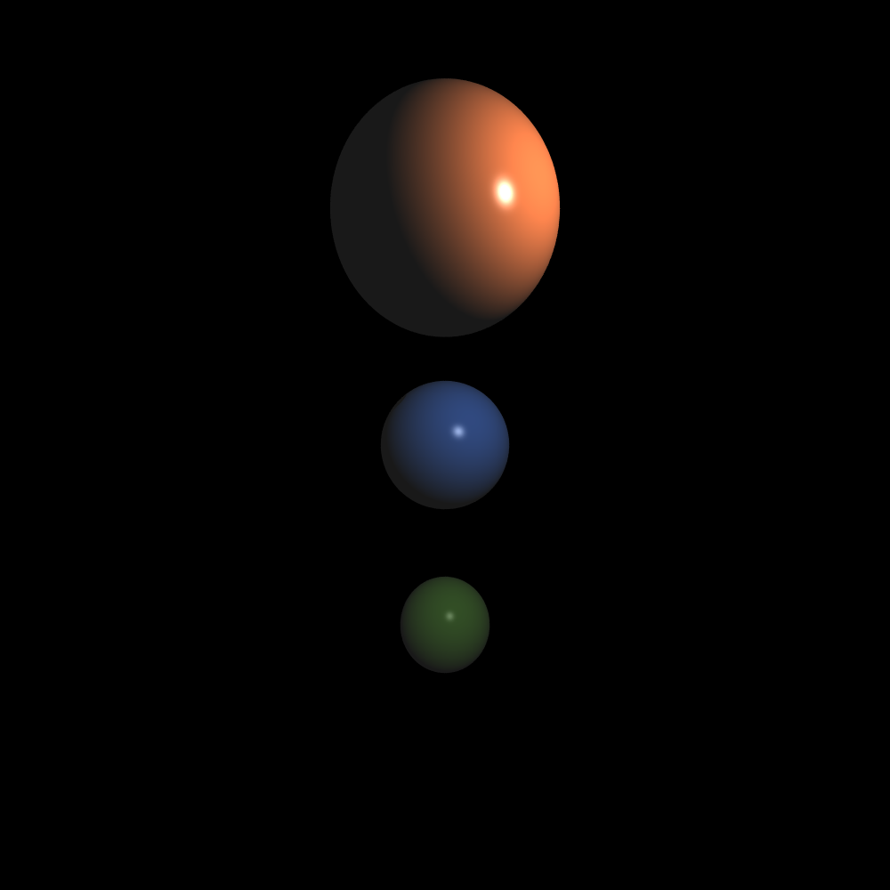 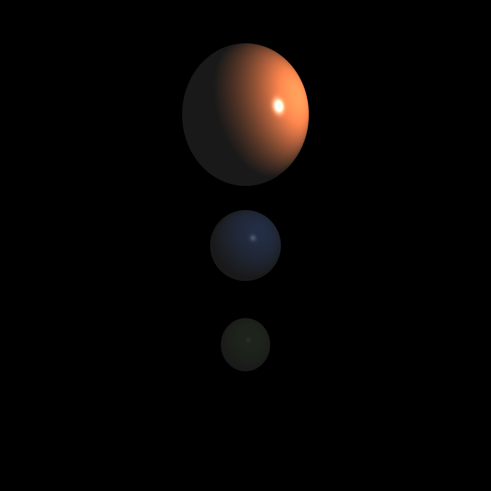 A series of 3 images showing point light fall off and anti-aliasing. To save space, only one .scene file is shown - just interchange the last point light number.cam 0 0 2 -1 -1 1 1 -1 1 -1 1 1 1 1 1 ltp 1 1 1 1 1 1 <0/1/2> lta 1 1 1 mat .1 .1 .1 .95 .45 .22 1 1 1 64 0 0 0 sph 0 1 0 .5 mat .1 .1 .1 .22 .45 .95 1 1 1 64 0 0 0 sph 0 0 -1.5 .5 mat .1 .1 .1 .45 .95 .22 1 1 1 64 0 0 0 sph 0 -2 -3 .5 alias
Boxes
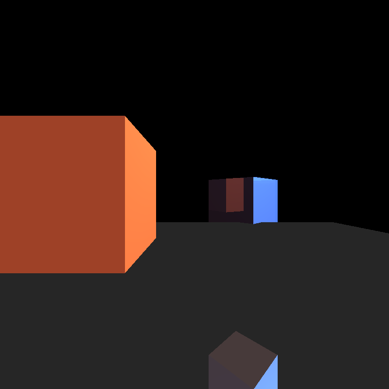 More .obj parsing (this time yours truly made the file): cubes instead of tetrahedrons. Transformations, reflections, etc.cam 0 0 2 -1 -1 1 1 -1 1 -1 1 1 1 1 1 mat .2 .1 .1 .18 .36 .9 .5 .5 .5 64 .2 .2 .2 ltp 1 1 1 1 1 1 0 ltd -.5 -.5 -.5 1 1 1 lta .5 .5 .5 xft .5 -.1 0 xfs .25 .25 .25 xfr 0 45 0 obj cube.obj xfz mat .2 .1 .1 .9 .36 .18 .5 .5 .5 64 0 0 0 xft -.25 0 1 xfr 0 -45 0 obj cube.obj xfz mat .3 .3 .3 0 0 0 0 0 0 0 1 1 1 tri -5 -1 -5 5 -1 -5 -5 -1 1 tri 5 -1 -5 5 -1 1 -5 -1 1 thread 3
Mirror, Mirror Everywhere
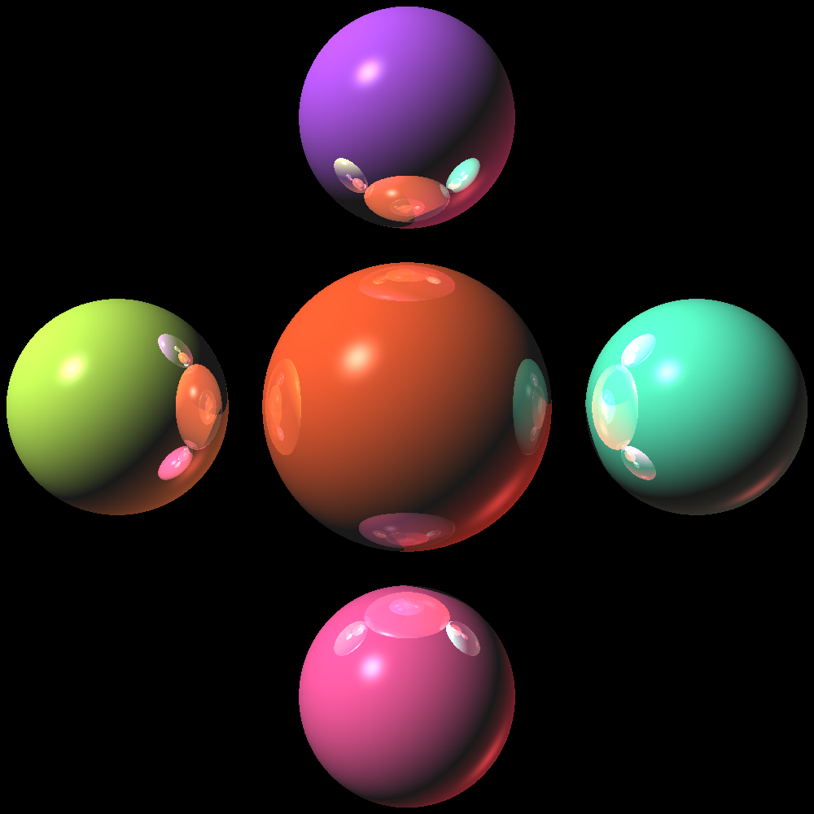 Fun with reflections!cam 0 0 0 -1 -1 -3 1 -1 -3 -1 1 -3 1 1 -3 ltd 0.57735027 -0.57735027 -0.57735027 1 1 1 ltd -0.57735027 0.57735027 0.57735027 .8 .22 .22 lta 1 1 1 mat 0.1 0.1 0.1 .96 .3 .11 .5 .5 .5 50 0.3 0.3 0.3 sph 0 0 -17 2 mat 0.1 0.1 0.1 .72 .29 1 .5 .5 .5 50 0.9 0.9 0.9 sph 0 4 -17 1.5 mat 0.1 0.1 0.1 1 .29 .6 .5 .5 .5 50 0.9 0.9 0.9 sph 0 -4 -17 1.5 mat 0.1 0.1 0.1 .29 1 .77 .5 .5 .5 50 0.9 0.9 0.9 sph 4 0 -17 1.5 mat 0.1 0.1 0.1 .77 1 .29 .5 .5 .5 50 0.9 0.9 0.9 sph -4 0 -17 1.5
A Quiet Night
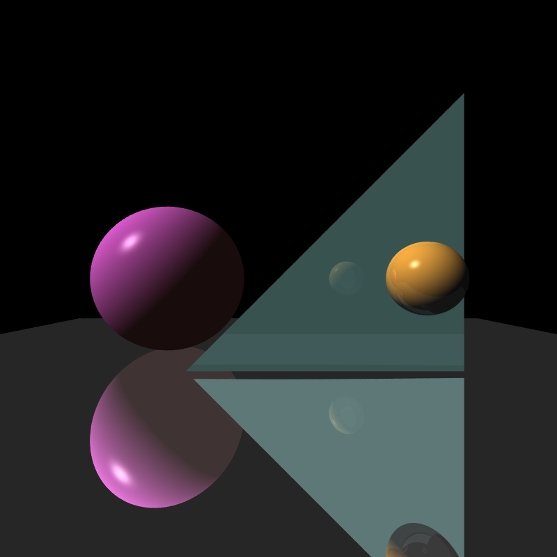 Random reflective geometries, anti-aliased.cam 0 0 2 -1 -1 1 1 -1 1 -1 1 1 1 1 1 mat .2 .1 .1 .36 .82 .80 .5 .5 .5 64 .2 .2 .2 ltd 1 -1 -.5 1 1 1 lta .5 .5 .5 tri 2 2 -1 -2 -2 -1 2 -2 -1 mat .2 .1 .1 .8 .32 .80 .5 .5 .5 64 0 0 0 sph -1.5 0 -2 1 mat .1 .1 .1 .92 .63 .21 .5 .5 .5 64 .2 .2 .2 sph 1 0 0.1 .25 mat .3 .3 .3 0 0 0 0 0 0 0 1 1 1 tri -5 -1 -5 5 -1 -5 -5 -1 1 tri 5 -1 -5 5 -1 1 -5 -1 1 alias thread 3
More Stuff to Show This Works
I put these up Tuesday after the assignment due date because Spring Break was Too Much Fun. Many thanks to Baruch for providing the base scenes and .obj files.
Simple shading
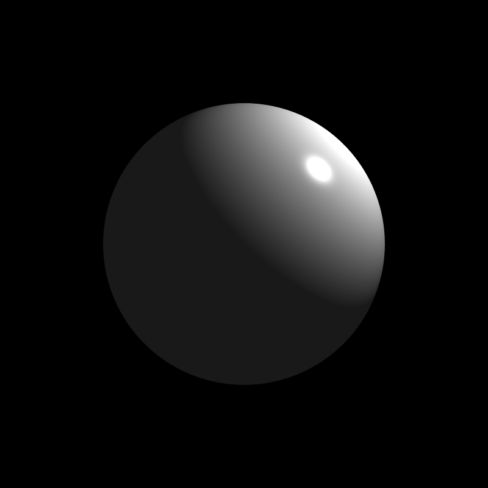 A sphere under a point and ambient light with diffuse and specular components to show that shading works.cam 0 0 2 -1 -1 1 1 -1 1 -1 1 1 1 1 1 mat 1 1 1 1 1 1 1 1 1 64 0 0 0 lta 0.1 0.1 0.1 ltp 1 1 1 1 1 1 0 sph 0 0 0 1 alias
Simple shadows
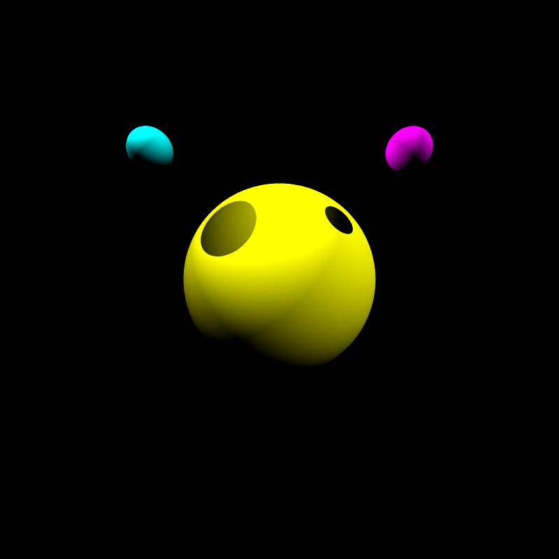 Three spheres, to show the difference in point and directional light shadows.
cam 0 0 2 -1 -1 1 1 -1 1 -1 1 1 1 1 1
ltd -1 -1 -1 1 1 1
ltp -1 1 1 1 1 1 0
mat 1 1 0 1 1 0 0 0 0 64 0 0 0
sph 0 0 0 0.65
mat 1 0 1 1 0 1 0 0 0 64 0 0 0
sph 0.6 0.6 0.7 0.1
mat 0 1 1 0 1 1 0 0 0 64 0 0 0
sph -0.6 0.6 0.7 0.1
alias
Reflections
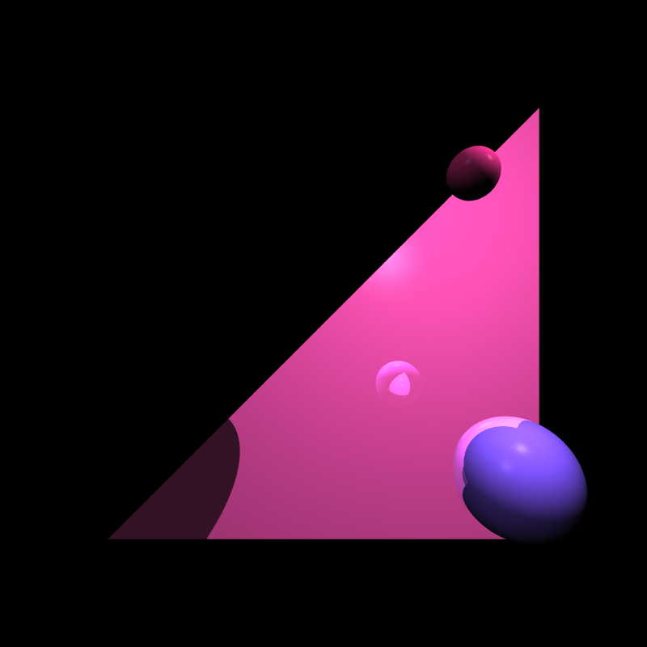 Two spheres (one reflective) and a reflective triangle. Also shows shadowing of a sphere on a triangle.cam 0 0 2 -1 -1 1 1 -1 1 -1 1 1 1 1 1 mat 0.1 0.1 0.1 .85 .27 .61 0.2 0.2 0.2 64 0.8 0.8 0.8 ltp 1 1 1 1 1 1 0 ltd 1 -1 -1 .4 .4 .4 lta 0.1 0.1 0.1 tri 2 2 -1 -2 -2 -1 2 -2 -1 mat 0.1 0.1 0.1 .92 .19 .54 0.2 0.2 0.2 64 0 0 0 sph 0.6 0.6 0.7 0.1 mat 0.1 0.1 0.1 .49 .32 1 0.2 0.2 0.2 64 0.8 0.8 0.8 sph 1 -0.8 0.3 0.3 alias
Shear me
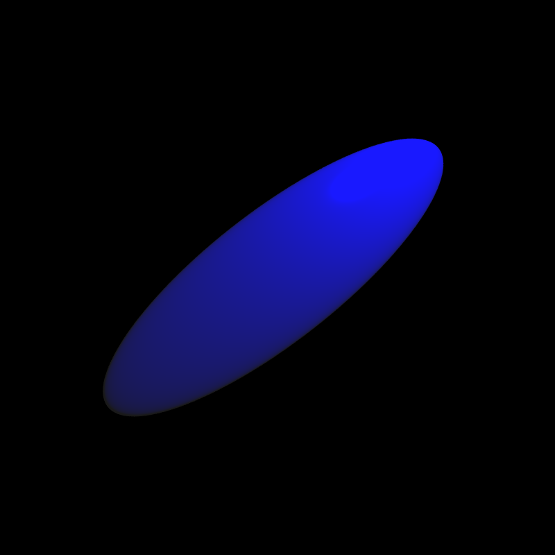 A rotated, scaled, and sheared (across the z-axis) blue sphere.cam 0 0 2 -1 -1 1 1 -1 1 -1 1 1 1 1 1 ltp 1 1 1 1 1 1 0 lta 0.1 0.1 0.1 xfz xfr 0 90 0 xfs 0.25 2 1 xfh 1 2 1 mat 1 1 1 0 0 1 0 0 1 64 0 0 0 sph 0 0 0 0.5 alias
.obj Normal Interpolation
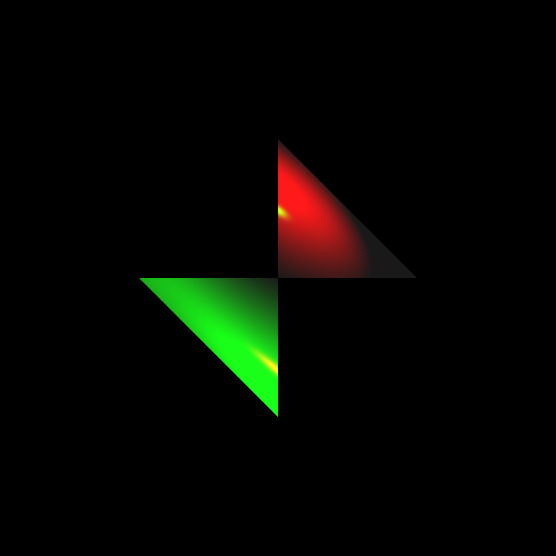 Two triangles with given "vn"s in the .obj shaded by their normals under a single point light directly above.cam 0 0 2 -1 -1 1 1 -1 1 -1 1 1 1 1 1 mat 0.1 0.1 0.1 1 0 0 0 1 0 64 0 0 0 ltp 0 1 1 1 1 1 0 lta 1 1 1 obj tri2.obj xfs -1 -1 1 mat 0.1 0.1 0.1 0 1 0 1 0 0 64 0 0 0 obj tri2.obj alias